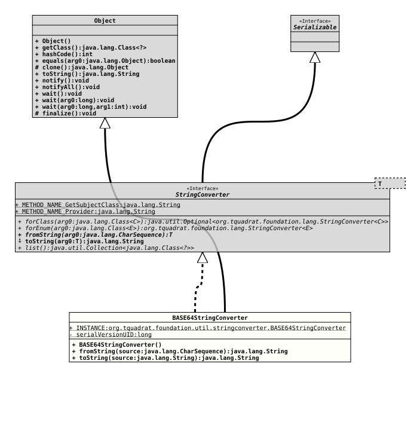

Class BASE64StringConverter
java.lang.Object
org.tquadrat.foundation.util.stringconverter.BASE64StringConverter
- All Implemented Interfaces:
Serializable, StringConverter<String>
@ClassVersion(sourceVersion="$Id: BASE64StringConverter.java 1032 2022-04-10 17:27:44Z tquadrat $")
@API(status=STABLE,
since="0.0.6")
public final class BASE64StringConverter
extends Object
implements StringConverter<String>
The implementation of
StringConverter
for
String
values in BASE64 format.
The BASE64 format returned from
toString(String)
contains the source String in
UTF-8
encoding and it is itself encoded to
ASCII.
Correspondingly,
fromString(CharSequence)
expects an ASCII encoded BASE64 stream containing a UTF-8 encoded
String.
Both methods are using the BASE64 basic encoding scheme.
- Author:
- Thomas Thrien (thomas.thrien@tquadrat.org)
- Version:
- $Id: BASE64StringConverter.java 1032 2022-04-10 17:27:44Z tquadrat $
- Since:
- 0.0.6
- See Also:
- UML Diagram
-

UML Diagram for "org.tquadrat.foundation.util.stringconverter.BASE64StringConverter"
{kind=link}
-
Field Summary
FieldsFields inherited from interface StringConverter
METHOD_NAME_GetSubjectClass, METHOD_NAME_Provider -
Constructor Summary
Constructors -
Method Summary
-
Field Details
-
INSTANCE
An instance of this class.
-
-
Constructor Details
-
BASE64StringConverter
public BASE64StringConverter()Creates a new instance ofBASE64StringConverter.
-
-
Method Details
-
fromString
- Specified by:
fromStringin interfaceStringConverter<String>- Throws:
IllegalArgumentException
-
toString
-